Section 5.1 Expanding the acceleration
Subsection 5.1.1 Expanding the total derivative of \(\hat{i}\)
Using the definition of the total derivative,
\begin{equation}
\frac{D \hat{i}}{Dt}
=
\frac{\partial \hat{i}}{\partial t}
+ u \, \frac{\partial \hat{i}}{\partial x}
+ v \, \frac{\partial \hat{i}}{\partial y}
+ w \, \frac{\partial \hat{i}}{\partial z}\tag{5.1.1}
\end{equation}
\begin{equation*}
\frac{\partial \hat{i}}{\partial t} = \vec{0}
\end{equation*}
since, at a fixed location on Earth or in its atmosphere, the local orientation of a unit direction vector does not change with time. Specifically, \(\hat{i}\) always points to the local east.
Furthermore, Figure 5.0.1 reveals that
\begin{equation*}
\frac{\partial \hat{i}}{\partial y} = \frac{\partial \hat{i}}{\partial z} = \vec{0}
\end{equation*}
\begin{equation}
\frac{D \hat{i}}{Dt}
= u \, \frac{\partial \hat{i}}{\partial x}\tag{5.1.2}
\end{equation}
To evaluate \(\dfrac{\partial \hat{i}}{\partial x}\text{,}\) we make a horizontal slice perpendicular to Earth’s axis of rotation at latitude \(\phi\) to create a disk of radius \(a \cos{\phi}\text{.}\) As shown in Figure 5.1.1 below, we then consider the change in \(\hat{i}\)’s orientation when its anchoring point is placed at two nearby points on Earth’s surface with latitude \(\phi\) and longitudes separated by angle \(\delta \lambda\) along arc \(\delta x\text{.}\)
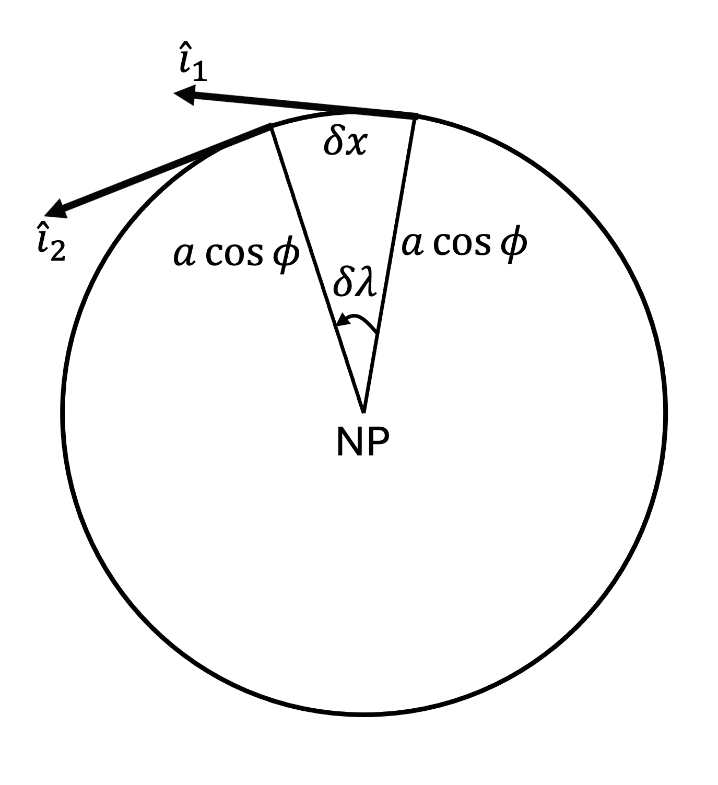
Fixing the tails of \(\hat{i}_1\) and \(\hat{i}_2\) together in Figure 5.1.2 below reveals that \(\delta \lambda\) is the angle swept out between them and \(\vec{\delta i}\) is the vector difference between them.
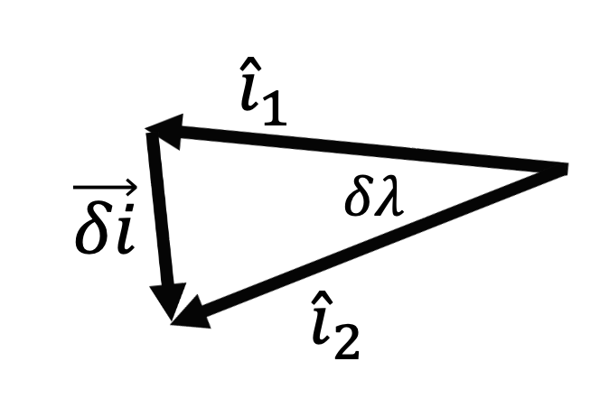
Reproducing Figure 5.1.1 with the tail of \(\hat{i}_1\) moved to the tail of \(\hat{i}_2\) and \(\vec{\delta i}\) additionally included in Figure 5.1.3 below makes these relationships even clearer.
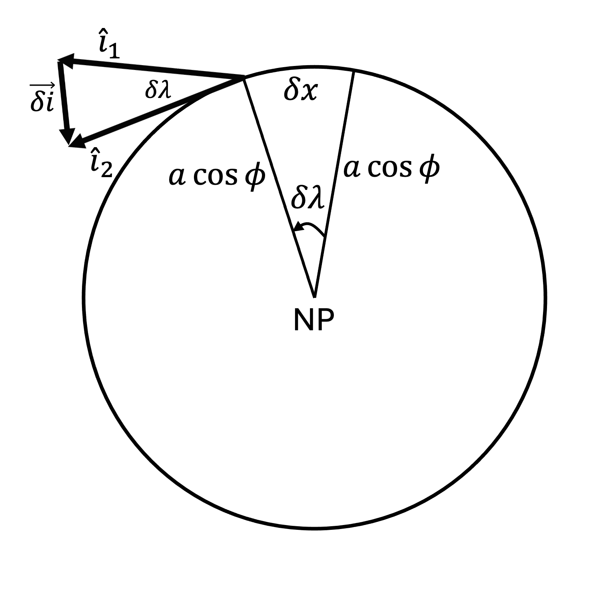
\begin{equation}
\delta x
= (a \cos{\phi}) \, \delta \lambda\tag{5.1.3}
\end{equation}
Note that we presented this formula in Section 2.3.
Likewise, we can use the arc length formula to approximate \(|\vec{\delta i}|\text{,}\) and we can take advantage of the fact that, since \(\hat{i}\) is a unit direction vector, \(|\hat{i}| = 1\text{.}\)
\begin{equation}
|\vec{\delta i}|
= |\hat{i_1}| \, \delta \lambda
= |\hat{i_2}| \, \delta \lambda
= |\hat{i}| \, \delta \lambda
= \delta \lambda\tag{5.1.4}
\end{equation}
Therefore,
\begin{equation}
\frac{|\vec{\delta i}|}{\delta x}
= \frac{\delta \lambda}{(a \cos{\phi}) \, \delta \lambda}
= \frac{1}{a \cos{\phi}}\tag{5.1.5}
\end{equation}
From Figure 5.1.3, we can see that as \(\delta \lambda \to 0\text{,}\) \(\delta x \to 0\) and \(\vec{\delta i}\) points directly inward toward the center of the disk, perpendicular to Earth’s axis of rotation. In particular, Figure 5.1.4 below shows that \(\vec{\delta i}\) points in the direction of \(\hat{j} \, \sin{\phi} -\hat{k} \, \cos{\phi}\text{.}\) Therefore,
\begin{equation}
\lim_{\delta x \to 0}
\frac{\vec{\delta i}}{\delta x}
=
\frac{\partial \hat{i}}{\partial x}
=
\frac{1}{a \cos{\phi}} (\hat{j} \, \sin{\phi} - \hat{k} \, \cos{\phi})\tag{5.1.6}
\end{equation}
\begin{equation}
\frac{D \hat{i}}{Dt}
=
u \frac{\partial \hat{i}}{\partial x}
=
\frac{u}{a \cos{\phi}} (\hat{j} \, \sin{\phi} - \hat{k} \, \cos{\phi})\tag{5.1.7}
\end{equation}
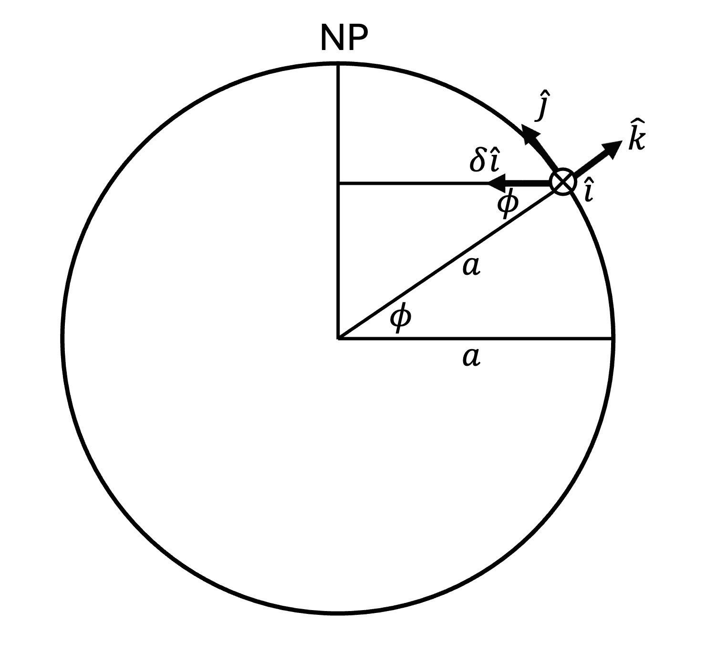
Subsection 5.1.2 Expanding the total derivative of \(\hat{j}\)
Again using the definition of the total derivative:
\begin{equation}
\frac{D \hat{j}}{Dt}
=
\frac{\partial \hat{j}}{\partial t}
+ u \, \frac{\partial \hat{j}}{\partial x}
+ v \, \frac{\partial \hat{j}}{\partial y}
+ w \, \frac{\partial \hat{j}}{\partial z}\tag{5.1.8}
\end{equation}
\begin{equation*}
\frac{\partial \hat{j}}{\partial t} = \vec{0}
\end{equation*}
since, at a fixed location on Earth or in its atmosphere, the local orientation of a unit direction vector does not change with time. Specifically, \(\hat{j}\) always points to the local north.
Furthermore, Figure 5.0.1 reveals that
\begin{equation*}
\frac{\partial \hat{j}}{\partial z} = \vec{0}
\end{equation*}
\begin{equation}
\frac{D \hat{j}}{Dt}
=
u \, \frac{\partial \hat{j}}{\partial x}
+ v \, \frac{\partial \hat{j}}{\partial y}\tag{5.1.9}
\end{equation}
To evaluate \(\dfrac{\partial \hat{j}}{\partial x}\text{,}\) we again make a horizontal slice perpendicular to Earth’s axis of rotation at latitude \(\phi\) to create a disk of radius \(a \cos{\phi}\text{.}\) As shown in Figure 5.1.5 below, we then consider the difference in \(\hat{j}\)’s orientation when its anchoring point is placed at two nearby points on Earth’s surface with latitude \(\phi\) and longitudes separated by angle \(\delta \lambda\) along arc \(\delta x\text{.}\)
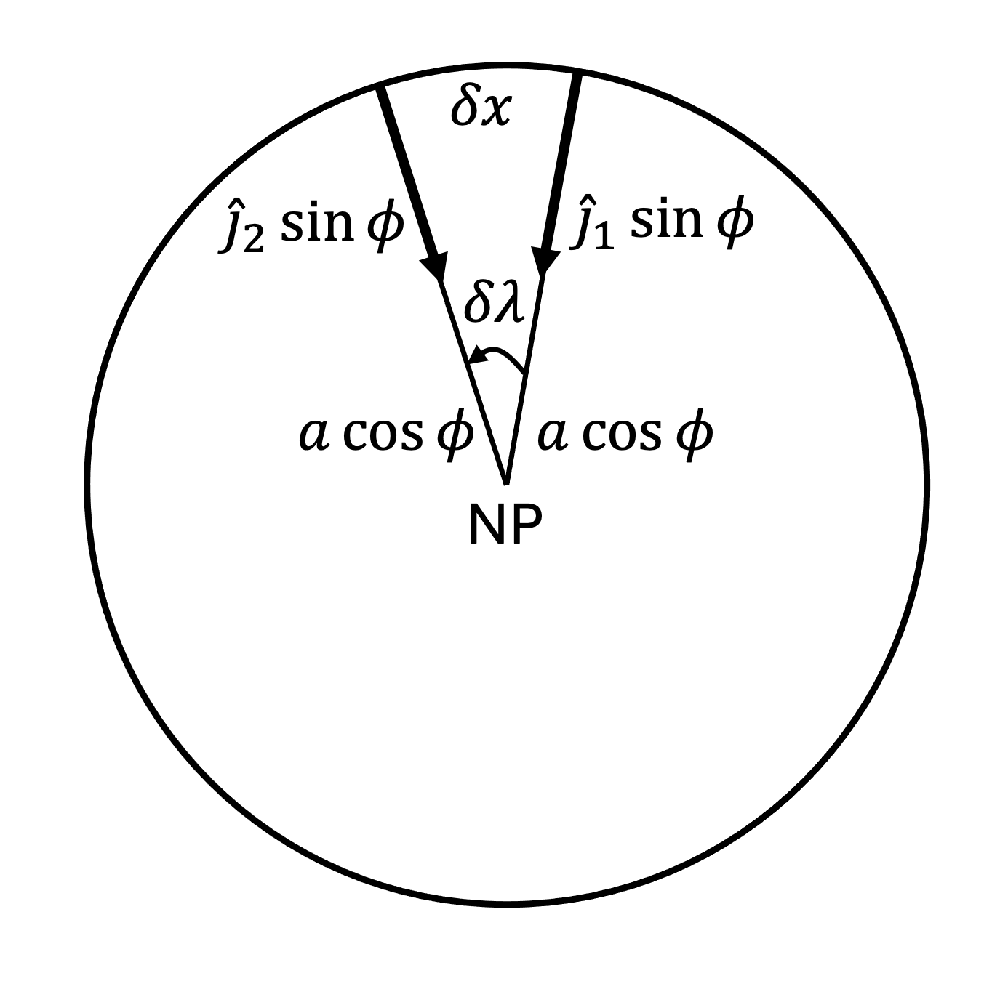
Before going further, note \(\hat{j} \, \sin{\phi}\) rather than \(\hat{j}\) is shown in Figure 5.1.5 because \(\hat{j} \, \sin{\phi}\) is the projection of \(\hat{j}\) onto the disk, as shown in Figure 5.1.6 below. The remaining portion of \(\hat{j}\text{,}\) \(\hat{j} \, \cos{\phi}\text{,}\) does not change with \(x\text{,}\) as it always points vertically upward from the disk.
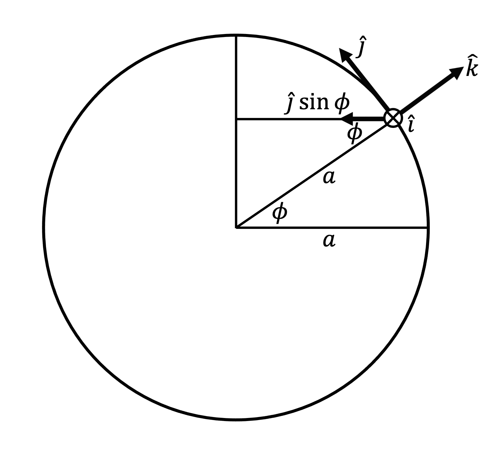
Fixing the tails of \(\hat{j}_1 \, \sin{\phi}\) and \(\hat{j}_2 \, \sin{\phi}\) together in Figure 5.1.7 below reveals that \(\delta \lambda\) is the angle swept out between them and \(\vec{\delta j}\) is the vector difference between them.
Reproducing Figure 5.1.5 with the tail of \(\hat{j}_1 \, \sin{\phi}\) moved to the tail of \(\hat{j}_2 \, \sin{\phi}\) and \(\vec{\delta j}\) additionally included in Figure 5.1.8 below makes these relationships even clearer.
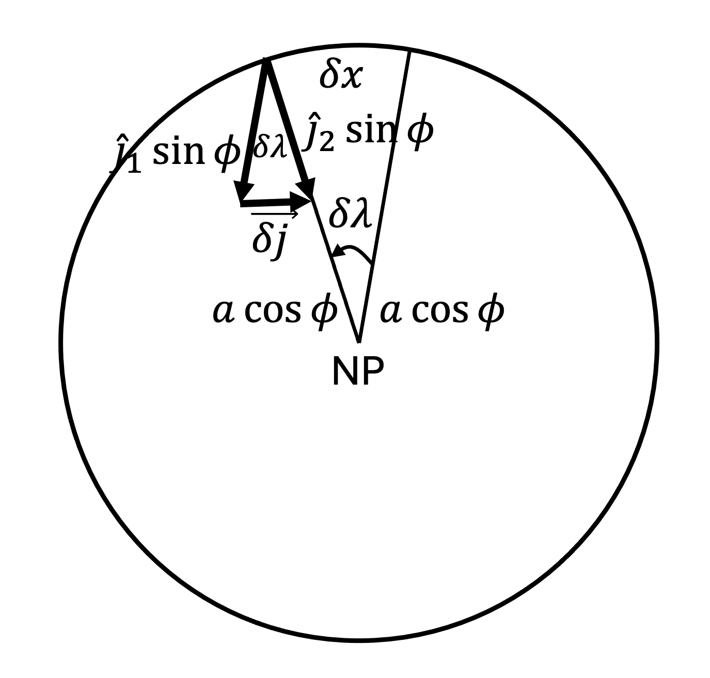
We again can use the arc length formula to approximate \(|\vec{\delta j}|\text{,}\) and we can take advantage of the fact that, since \(\hat{j}\) is a unit direction vector, \(|\hat{j}| = 1\text{.}\)
\begin{equation}
|\vec{\delta j}|
= |\hat{j_1}|(\sin{\phi}) \, \delta \lambda
= |\hat{j_2}|(\sin{\phi}) \, \delta \lambda
= |\hat{j}|(\sin{\phi}) \, \delta \lambda
= (\sin{\phi}) \, \delta \lambda\tag{5.1.10}
\end{equation}
And as noted in Subsection 5.1.1, \(\delta x = (a \cos{\phi}) \, \delta \lambda\text{.}\) Therefore,
\begin{equation}
\frac{|\vec{\delta j}|}{\delta x}
=
\frac{(\sin{\phi}) \, \delta \lambda}{(a \cos{\phi}) \, \delta \lambda}
=
\frac{\tan{\phi}}{a}\tag{5.1.11}
\end{equation}
From Figure 5.1.8, we can see that as \(\delta \lambda \to 0\text{,}\) \(\delta x \to 0\) and \(\vec{\delta j}\) points in the \(-\hat{i}\) direction. So
\begin{equation}
\lim_{\delta x \to 0}
\frac{\vec{\delta j}}{\delta x}
=
\frac{\partial \hat{j}}{\partial x}
=
-\frac{\tan{\phi}}{a} \, \hat{i}\tag{5.1.12}
\end{equation}
To evaluate \(\dfrac{\partial \hat{j}}{\partial y}\text{,}\) we make a vertical slice through Earth’s axis of rotation at longitude \(\lambda\text{.}\) As shown in Figure 5.1.9 below, we then consider the difference in \(\hat{j}\)’s orientation when its anchoring point is placed at two nearby points on Earth’s surface with longitude \(\lambda\) and latitudes separated by angle \(\delta \phi\) along arc \(\delta y\text{.}\)
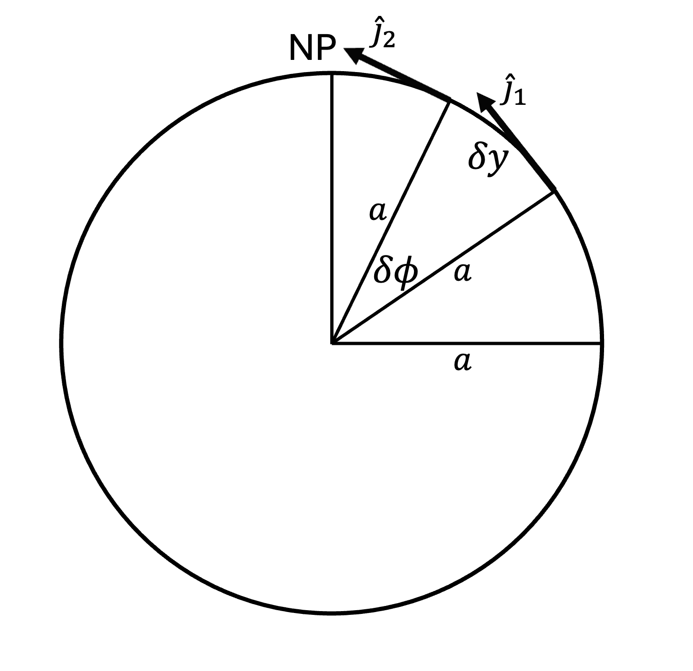
Fixing the tails of \(\hat{j}_1\) and \(\hat{j}_2\) together in Figure 5.1.10 below reveals that \(\delta \phi\) is the angle swept out between them and \(\vec{\delta j}\) is the vector difference between them.
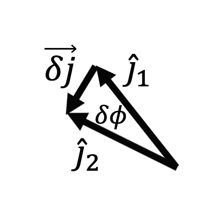
Reproducing Figure 5.1.9 with the tail of \(\hat{j}_1\) moved to the tail of \(\hat{j}_2\) and \(\vec{\delta j}\) additionally included in Figure 5.1.11 below makes these relationships even clearer.
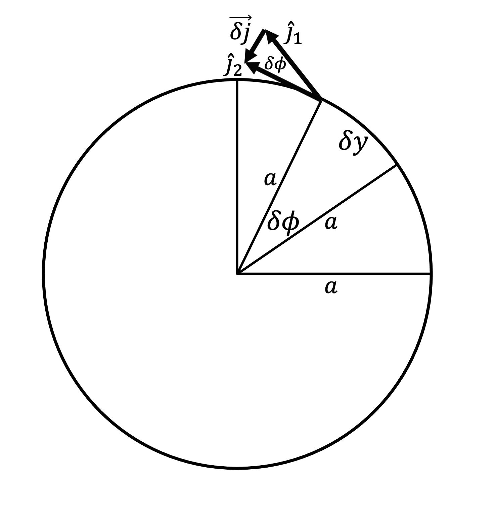
We again can use the arc length formula to express \(\delta y\) in terms of \(\delta \phi\text{:}\)
\begin{equation}
\delta y
=
a \, \delta \phi\tag{5.1.13}
\end{equation}
Note that we presented this formula in Section 2.3.
Likewise, we again can use the arc length formula to approximate \(|\vec{\delta j}|\text{,}\) and we can take advantage of the fact that, since \(\hat{j}\) is a unit direction vector, \(|\hat{j}| = 1\text{.}\)
\begin{equation}
|\vec{\delta j}|
= |\hat{j_1}| \, \delta \phi
= |\hat{j_2}| \, \delta \phi
= |\hat{j}|\, \delta \phi
= \delta \phi\tag{5.1.14}
\end{equation}
Therefore,
\begin{equation}
\frac{|\vec{\delta j}|}{\delta y}
=
\frac{\delta \phi}{a \, \delta \phi}
= \frac{1}{a}\tag{5.1.15}
\end{equation}
From Figure 5.1.11, we can see that as \(\delta \phi \to 0\text{,}\) \(\delta y \to 0\) and \(\vec{\delta j}\) points in the \(-\hat{k}\) direction. So
\begin{equation}
\lim_{\delta y \to 0}
\frac{\vec{\delta j}}{\delta y}
=
\frac{\partial \hat{j}}{\partial y}
=
-\frac{1}{a} \hat{k}\tag{5.1.16}
\end{equation}
\begin{equation}
\frac{D \hat{j}}{Dt}
=
u \frac{\partial \hat{j}}{\partial x}
+ v \frac{\partial \hat{j}}{\partial y}
=
-\frac{u \tan{\phi}}{a} \, \hat{i}
-\frac{v}{a} \, \hat{k}\tag{5.1.17}
\end{equation}
Subsection 5.1.3 Expanding the total derivative of \(\hat{k}\)
Again using the definition of the total derivative:
\begin{equation}
\frac{D \hat{k}}{Dt}
=
\frac{\partial \hat{k}}{\partial t}
+ u \, \frac{\partial \hat{k}}{\partial x}
+ v \, \frac{\partial \hat{k}}{\partial y}
+ w \, \frac{\partial \hat{k}}{\partial z}\tag{5.1.18}
\end{equation}
\begin{equation*}
\frac{\partial \hat{k}}{\partial t} = \vec{0}
\end{equation*}
since, at a fixed location on Earth or in its atmosphere, the local orientation of a unit direction vector does not change with time. Specifically, \(\hat{k}\) always points locally upward.
Furthermore, Figure 5.0.1 reveals that
\begin{equation*}
\frac{\partial \hat{k}}{\partial z} = \vec{0}
\end{equation*}
\begin{equation}
\frac{D \hat{k}}{Dt}
=
u \, \frac{\partial \hat{k}}{\partial x}
+ v \, \frac{\partial \hat{k}}{\partial y}\tag{5.1.19}
\end{equation}
To evaluate \(\dfrac{\partial \hat{k}}{\partial x}\text{,}\) we again make a horizontal slice perpendicular to Earth’s axis of rotation at latitude \(\phi\) to create a disk of radius \(a \cos{\phi}\text{.}\) As shown in Figure 5.1.12 below, we then consider the difference in \(\hat{k}\)’s orientation when its anchoring point is placed at two nearby points on Earth’s surface with latitude \(\phi\) and longitudes separated by angle \(\delta \lambda\) along arc \(\delta x\text{.}\)
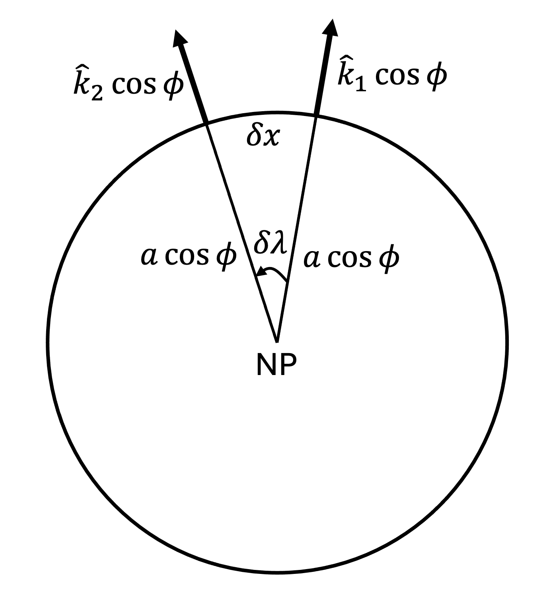
Before going further, note \(\hat{k} \, \cos{\phi}\) rather than \(\hat{k}\) is shown in Figure 5.1.12 because \(\hat{k} \, \cos{\phi}\) is the projection of \(\hat{k}\) onto the disk, as shown in Figure 5.1.13 below. The remaining portion of \(\hat{k}\text{,}\) \(\hat{k} \, \sin{\phi}\text{,}\) does not change with \(x\text{,}\) as it always points vertically upward from the disk.
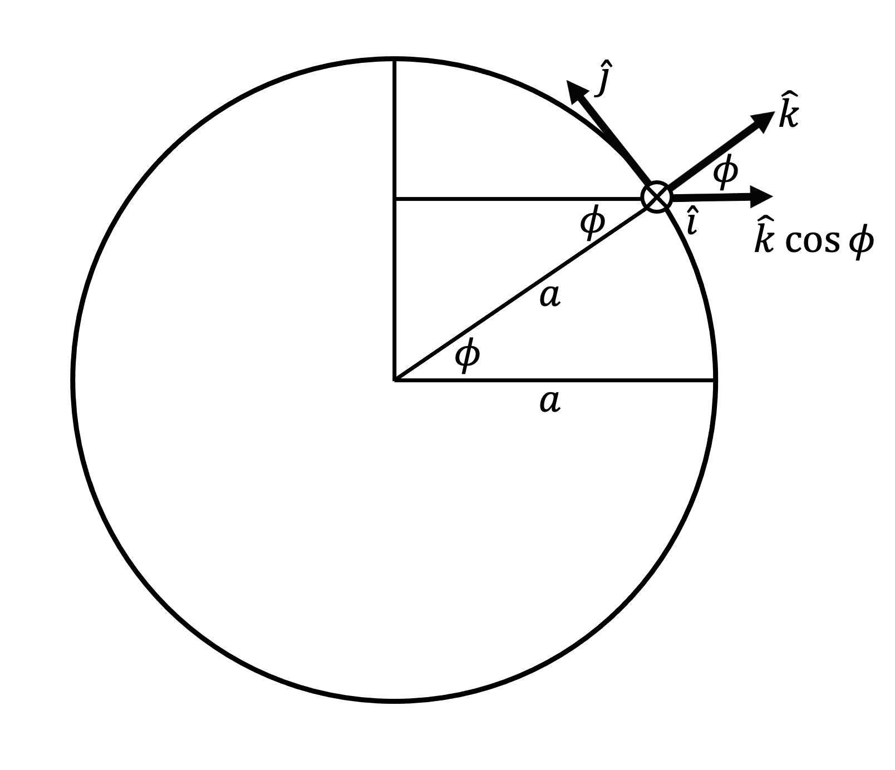
Fixing the tails of \(\hat{k}_1 \, \cos{\phi}\) and \(\hat{k}_2 \, \cos{\phi}\) together in Figure 5.1.14 below reveals that \(\delta \lambda\) is the angle swept out between them and \(\vec{\delta k}\) is the vector difference between them.
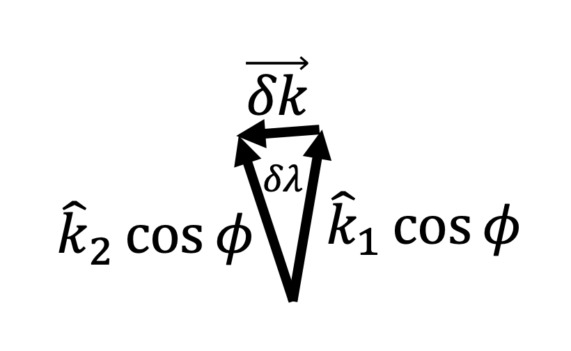
Reproducing Figure 5.1.12 with the tail of \(\hat{k}_1 \, \cos{\phi}\) moved to the tail of \(\hat{k}_2 \, \cos{\phi}\) and \(\vec{\delta k}\) additionally included in Figure 5.1.15 below makes these relationships even clearer.
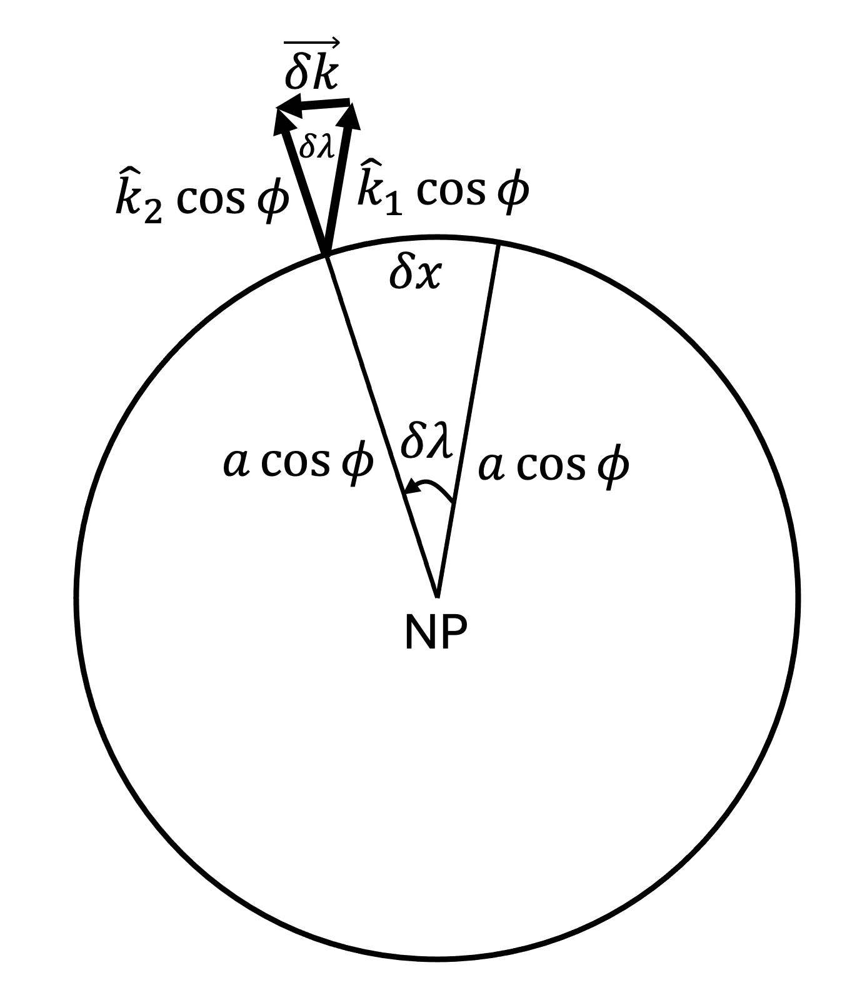
We again can use the arc length formula to approximate \(|\vec{\delta k}|\text{,}\) and we can take advantage of the fact that, since \(\hat{k}\) is a unit direction vector, \(|\hat{k}| = 1\text{.}\)
\begin{equation}
|\vec{\delta k}|
= |\hat{k_1}|(\cos{\phi}) \, \delta \lambda
= |\hat{k_2}|(\cos{\phi}) \, \delta \lambda
= |\hat{k}|(\cos{\phi}) \, \delta \lambda
= (\cos{\phi}) \, \delta \lambda\tag{5.1.20}
\end{equation}
And as noted in Subsection 5.1.1, \(\delta x = (a \cos{\phi}) \, \delta \lambda\text{.}\) Therefore,
\begin{equation}
\frac{|\vec{\delta k}|}{\delta x}
=
\frac{(\cos{\phi}) \, \delta \lambda}{(a \cos{\phi}) \, \delta \lambda}
=
\frac{1}{a}\tag{5.1.21}
\end{equation}
From Figure 5.1.15, we can see that as \(\delta \lambda \to 0\text{,}\) \(\delta x \to 0\) and \(\vec{\delta k}\) points in the \(\hat{i}\) direction. So
\begin{equation}
\lim_{\delta x \to 0}
\frac{\vec{\delta k}}{\delta x}
=
\frac{\partial \hat{k}}{\partial x}
=
\frac{1}{a} \, \hat{i}\tag{5.1.22}
\end{equation}
To evaluate \(\dfrac{\partial \hat{k}}{\partial y}\text{,}\) we again make a vertical slice through Earth’s axis of rotation at longitude \(\lambda\text{.}\) As shown in Figure 5.1.16 below, we then consider the difference in \(\hat{k}\)’s orientation when its anchoring point is placed at two nearby points on Earth’s surface with longitude \(\lambda\) and latitudes separated by angle \(\delta \phi\) along arc \(\delta y\text{.}\)
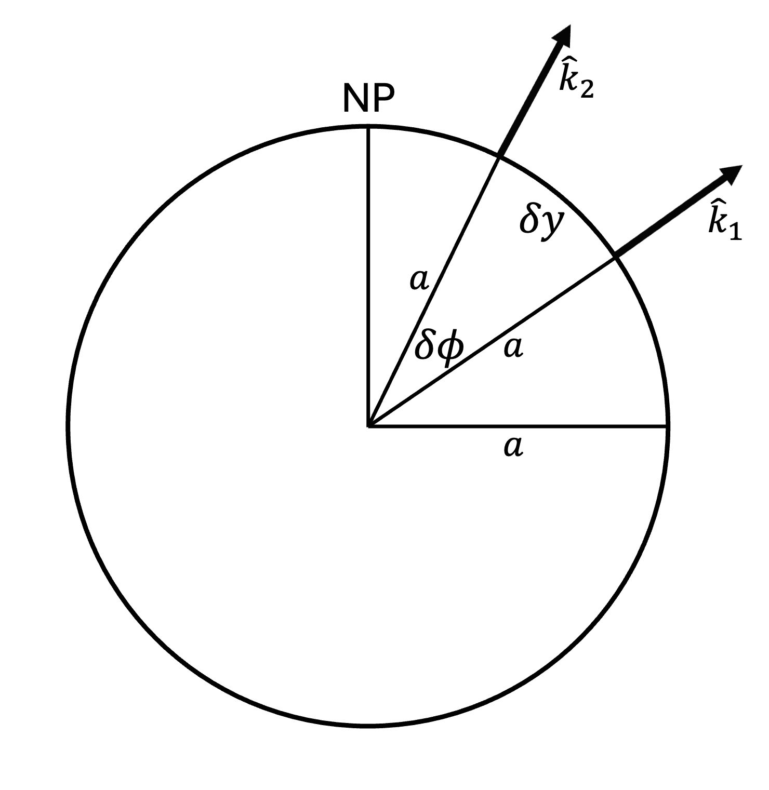
Fixing the tails of \(\hat{k}_1\) and \(\hat{k}_2\) together in Figure 5.1.17 below reveals that \(\delta \phi\) is the angle swept out between them and \(\vec{\delta k}\) is the vector difference between them.
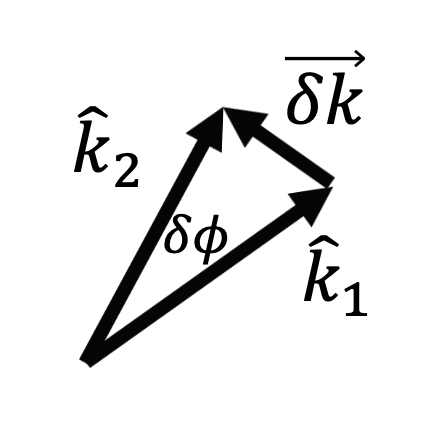
Reproducing Figure 5.1.16 with the tail of \(\hat{k}_1\) moved to the tail of \(\hat{k}_2\) and \(\vec{\delta k}\) additionally included in Figure 5.1.18 below makes these relationships even clearer.
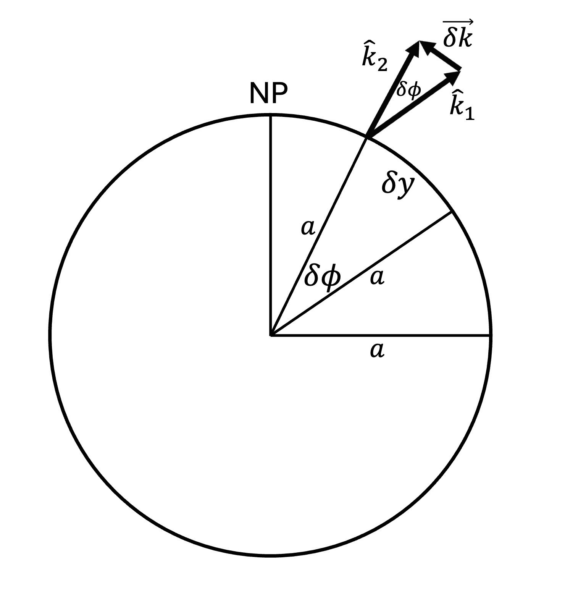
We again can use the arc length formula to approximate \(|\vec{\delta k}|\text{,}\) and we can take advantage of the fact that, since \(\hat{k}\) is a unit direction vector, \(|\hat{k}| = 1\text{.}\)
\begin{equation}
|\vec{\delta k}|
= |\hat{k_1}| \, \delta \phi
= |\hat{k_2}| \, \delta \phi
= |\hat{k}| \, \delta \phi
= \delta \phi\tag{5.1.23}
\end{equation}
\begin{equation}
\frac{|\vec{\delta k}|}{\delta y}
=
\frac{\delta \phi}{a \, \delta \phi}
= \frac{1}{a}\tag{5.1.24}
\end{equation}
From Figure 5.1.18, we can see that as \(\delta \phi \to 0\text{,}\) \(\delta y \to 0\) and \(\vec{\delta k}\) points in the \(\hat{j}\) direction. So
\begin{equation}
\lim_{\delta y \to 0}
\frac{\vec{\delta k}}{\delta y}
=
\frac{\partial \hat{k}}{\partial y}
=
\frac{1}{a} \, \hat{j}\tag{5.1.25}
\end{equation}
\begin{equation}
\frac{D \hat{k}}{Dt}
=
u \frac{\partial \hat{k}}{\partial x}
+ v \frac{\partial \hat{k}}{\partial y}
=
\frac{u}{a} \, \hat{i}
+ \frac{v}{a} \, \hat{j}\tag{5.1.26}
\end{equation}
Subsection 5.1.4 Putting everything together
\begin{align}
\frac{D\vec{u}}{Dt}
\amp =
\left(
\frac{Du}{Dt} \, \hat{i}
+ \frac{Dv}{Dt} \, \hat{j}
+ \frac{Dw}{Dt} \, \hat{k}
\right)
+
\left(
u \, \frac{D \hat{i}}{Dt}
+ v \, \frac{D \hat{j}}{Dt}
+ w \, \frac{D \hat{k}}{Dt}
\right)\notag\\
\amp =
\frac{Du}{Dt} \, \hat{i}
+ \frac{Dv}{Dt} \, \hat{j}
+ \frac{Dw}{Dt} \, \hat{k}\notag\\
\amp \quad
+
u \left(
\frac{u}{a \cos{\phi}} (\hat{j} \, \sin{\phi} - \hat{k} \, \cos{\phi})
\right)
+
v \left(
-\frac{u \tan{\phi}}{a} \, \hat{i}
-\frac{v}{a} \, \hat{k}
\right)
+
w \left(
\frac{u}{a} \, \hat{i}
+ \frac{v}{a} \, \hat{j}
\right)\notag\\
\amp =
\left(
\frac{Du}{Dt}
+ \frac{uw}{a}
- \frac{uv \tan{\phi}}{a}
\right) \hat{i}
+
\left(
\frac{Dv}{Dt}
+ \frac{vw}{a}
+ \frac{u^2 \tan{\phi}}{a}
\right) \hat{j}
+
\left(
\frac{Dw}{Dt}
- \frac{u^2 + v^2}{a}
\right) \hat{k}\tag{5.1.27}
\end{align}
when applied to the spherical Earth. The "extra" terms inversely proportional to \(a\) are called curvature terms, and the above derivations show that they result from Earth’s sphericity. Specifically, they are caused by Earth’s surface curving away underneath the straight-line trajectory of \(\vec{u}\text{.}\)
Subsection 5.1.5 Author’s note on the simplifying use of \(a\)
The derivations of the curvature terms shown above assumed the unit direction vectors were placed on Earth’s surface, and consequently these terms are inversely proportional to Earth’s mean radius \(a\text{.}\) However, as Figure 5.0.1shows, the derivations also apply to locations within Earth’s atmosphere at geometric height \(z\) above Earth’s mean sea level. In this case, \(a\) would be replaced by \(a + z\) in the ensuing derivations and the resulting curvature terms in (5.1.27). It is perfectly fine to make this replacement, but be aware that most texts—including [Bluestein (1992)], [Martin (2006)], and [Holton and Hakim (2013)]—use \(a\) rather than \(a + z\) for simplicity. This simplification is acceptable since the planet is much thicker than its atmosphere, and it especially is acceptable since the majority of atmospheric motions of interest occur close to Earth’s surface.